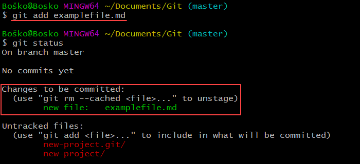

¿QUÉ ES GIT?

Definición
GIT es el SCV (sistema de control de versiones) de código abierto más utilizado que te permite rastrear los cambios realizados en los archivos. Las empresas y los programadores suelen utilizar el GIT para colaborar en el desarrollo de software y aplicaciones.
GIT está disponible en la mayoría de sistemas operativos, tales como : Linux, Windows, Mac y Solaris.
Historia
Fue diseñado por Linus Torvalds, pensando en la eficiencia, la confiabilidad y compatibilidad del mantenimiento de versiones, cuando éstas tienen un gran número de archivos de código fuente. Su propósito es llevar registro de los cambios en archivos de computadora incluyendo coordinar el trabajo que varias personas realizan sobre archivos compartidos en un repositorio de código
TÉRMINOS BÁSICOS
Algunos términos básicos
- El Repositorio es todo proyecto que está siendo seguido por GIT, ya tiene un historial de GIT en el que se están registrando sus cambios.
- El Commit es cada uno de los cambios registrados en el historial de GIT. Cada uno de los desarrolladores manda los commits de los cambios que ha hecho.
- Las Branch son nuevas ramas que toma el proyecto. La rama principal se llama máster y es donde está el proyecto que sale a producción. Cada vez que es necesario sacar una nueva característica o corregir algo, se saca una rama, de tal manera que se pueda trabajar en un ambiente aislado.
- El Clon es una copia exacta del repositorio. Cuando un programador se integra a un equipo de trabajo lo primero que debe hacer es clonar el repositorio en su equipo local.

COMANDOS
¿Qué es un comando en git?
- Los Comandos son fragmentos de código que nos permiten interactuar con GIT, es decir sirven para generar una nueva branch, crear un repositorio, clonar un repositorio existente, etc.

Ejemplos de algunos comandos:
- 1. .git init - Creará un nuevo repositorio local GIT.
- 2. .git clone - Se usa para copiar un repositorio, con el propósito de modificarlo.
- 3. .git add - Se usa para agregar archivos al área de preparación.
- 4. .git commit - Creará una instantánea de los cambios y la guardará en el directorio git.
- 5. .git config - Establece una configuración específica de usuario, como el email, nombre de usuario y tipo de formato, etc.
- 6. .git status - Muestra la lista de los archivos que se han cambiado junto con los archivos que están por ser preparados o confirmados.
- 7. .git push - Envia confirmaciones locales a la rama maestra del repositorio remoto.
- 8. .git checkout - Crea ramas y te ayuda a navegar entre ellas.
- 9. .git remote - Permite ver todos los repositorios remotos.